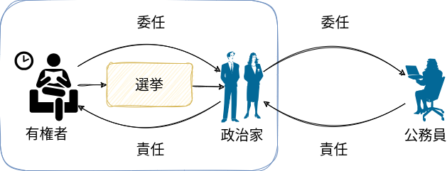
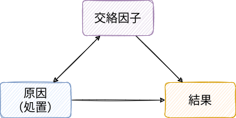

2 投票行動
選挙制度＝選挙（という名のゲーム）のルール
- ゲーム：互いに影響を及ぼし合う、したがって相手の出方を伺いながら自分の行動を選択する状況

→ルールの下で有権者はどのように投票するのか（しないのか）？
- 政治行動論、投票行動論、政治心理学、政治文化論
- 飯田健ほか (2015)「政治行動論」
- 松林哲也 (2023)「何が投票率を高めるのか」
- 稲増一憲 (2022)「マスメディアと何か」
この章では、有権者はなぜ投票に行くのか、どのように投票先を選択するのかを考えます。
2.1 投票参加
- 投票率の低下（特に若者）

2.1.1 投票しないパラドックス
\(R = P \times B - C\)
- \(R\) (reward)：投票の便益（メリット）
- \(B\) (benefit)：自分にとって好ましい候補者が当選することで（そうではない候補者と比べて）得られる便益
- \(P\) (probability)：自分が投票に行くことで望ましい選挙結果になる確率
- \(C\) (cost)：投票に行くことや投票先を調べることで自らが被る費用
- 機会費用 (opportunity cost)
∴投票しない（棄権の）パラドックス
ライカー＝オードシュック・モデル：\(R = P \times B - C + D\)
- \(D\) (duty/democratic value)：投票に行くこと自体で得られる便益
- 義務感、満足感……
政治的知識、教育水準、年齢→投票コスト
∴個人的属性は重要／政策的意義は限定的
2.1.2 投票環境
- 投票制度
- 当日投票所の減少／期日前投票所の増加
- 記名式投票
- オンライン投票？
仮に期日前投票所の数と投票率の間に関係がない、あるいは負の関係があったとしても、期日前投票所には投票率を上げる効果がないとは「言えません」（なぜ？）。相関 (correlation) は因果ではないですが、因果だと見えてしまう関係を「見かけの相関」と言います。

政治学や社会科学で広く使われているデータ分析の方法として回帰分析というものがあります。例えば、次のような式を想定して、
\[ y_i = \alpha + \beta_1 \times x_{i1} + \beta_2 \times x_{i2} + \varepsilon_i \]
- \(y_i\)：選挙区\(i\)の投票率
- \(x_{i1}\)：選挙区\(i\)の当日投票所数
- \(x_{i2}\)：選挙区\(i\)の期日前投票所数
- （\(\varepsilon_i\)：その他の要因）
データから\(\beta_1, \beta2\)を計算することができます（最小二乗法: OLS）。
- 啓発活動
啓発活動の有無によって投票率の高低を比較して因果関係を言えるでしょうか。見かけの相関の可能性はないでしょうか。
政治学では対象者をランダムに分けて、異なる刺激を与え、その結果が異なるかどうかを検証する「実験」（ランダム化比較試験 [Randomized Controlled Trial: RCT]）を用いることがあります。実社会で行う実験をフィールド実験、世論調査の中で行う実験をサーベイ実験と言います。

- 選挙制度
- 選挙区定数
- 定数不均衡（都市部／地方）
- 義務投票制
- 新規政党
- 差別化、競争度
新党効果をどのように検証すればいいでしょうか。まず、「新党が出馬した選挙区」と「新党が出馬しなかった選挙区」の投票率を比較しても、見かけの相関かもしれません。
次に、新党が出馬した選挙区の「出馬する前の選挙」と「出馬したときの選挙」の投票率を比較しても不十分です。もしかすると、全国的に投票率が高まっており、それを受けて新党が登場したからかもしれないからです。このように、前後比較から因果を（誤って）導くことを前後即因果の誤謬と言います。
- 女性議員
2.2 投票選択
投票先を選ぶ際の基準
- 争点投票、政策投票
- 政党投票
- イデオロギー、政党ラベル

- 個人投票
- 候補者特性（世襲、知名度、性別、年齢、外見……）／利益誘導
- 誠実投票／戦略投票
- 業績評価投票
- 経済投票 (pocketbook or sociotropic)
2.2.1 日本人を対象にした「実験」
- 堀内優作ほか「衆院総選挙、緊急解析！ データが明かした有権者の本音」日経ビジネス
- 堀内優作「マニフェスト選挙を疑え：2021年総選挙の計量政治学」日経ビジネス


→投票によって選挙結果はどのように変わり、政党はどのように応答するのか？
2.3 メディア
- 強力効果論
- 説得効果（皮下注射モデル、魔法の弾丸モデル）
- ナチスのプロパガンダ

データ分析において信頼区間とは分析結果の不確実性の範囲を示しています。信頼区間に0が含まれている場合、統計的に有意ではない（0と区別がつかない）です。
- 限定効果論
- 選択メカニズム（選択的接触、選択的知覚、選択的記憶）
- 第三者効果、敵対的メディア認知
- 新しい強力効果論
- 誘発効果（議題設定、プライミング、フレーミング）
- ソーシャル・メディア
- 選好に基づく強化
- パーソナライゼーション
- エコー・チェンバー、フィルターバブル／多様な意見
- 影響力工作？


→候補者や政党は選挙においてどのように行動するのか？ 選挙は政治に影響するのか？